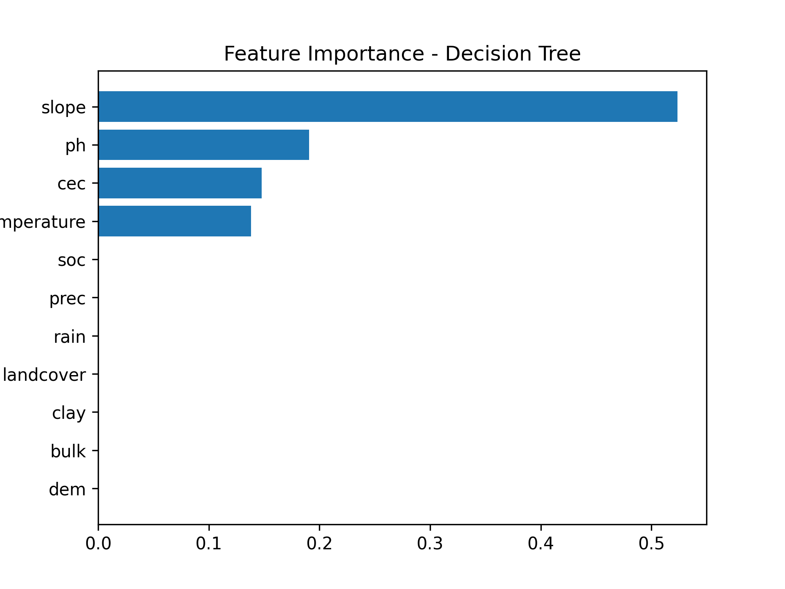

Evaluasi Model Decision Tree
Evaluasi performa model Decision Tree dalam mempelajari label kesesuaian lahan berbasis data spasial.
Model Decision Tree digunakan untuk mempelajari hubungan antara variabel biofisik lahan dengan kelas kesesuaian lahan kelapa sawit yang diperoleh dari proses klasifikasi berbasis FAO dan BBSDLP. Model bekerja dengan membentuk aturan keputusan secara hierarkis sehingga setiap variabel dapat berkontribusi dalam proses klasifikasi.
Feature Importance
Grafik berikut menunjukkan tingkat kontribusi masing-masing variabel terhadap proses klasifikasi yang dilakukan oleh model Decision Tree.

| Aktual \ Prediksi | N | S1 | S2 | S3 |
|---|---|---|---|---|
| N | 28 | 2 | 1 | 3 |
| S1 | 0 | 80 | 0 | 0 |
| S2 | 0 | 39 | 293 | 1 |
| S3 | 1 | 10 | 7 | 82 |
Model Decision Tree menghasilkan akurasi sebesar 88.30%, dengan precision 91.62%, recall 88.30%, dan F1-Score 89.06%.
Hasil tersebut menunjukkan bahwa model mampu mempelajari hubungan antara variabel biofisik lahan dan kelas kesesuaian lahan dengan cukup baik. Sebagian besar sampel berhasil diklasifikasikan secara benar pada kelas S1, S2, S3, maupun N.
Berdasarkan confusion matrix, kesalahan klasifikasi masih ditemukan terutama pada kelas S2 yang sebagian diprediksi sebagai S1. Kondisi ini menunjukkan adanya kemiripan karakteristik lingkungan antara kedua kelas pada beberapa lokasi sehingga batas klasifikasi tidak selalu dapat dipisahkan secara tegas oleh model Decision Tree.
Secara keseluruhan, Decision Tree mampu memberikan interpretasi yang baik terhadap faktor-faktor kesesuaian lahan dan dapat digunakan sebagai model dasar untuk evaluasi kesesuaian lahan kelapa sawit di Pulau Sumatra.
Meskipun memiliki kemampuan interpretasi yang baik, performa Decision Tree masih berada di bawah Random Forest yang menghasilkan akurasi dan stabilitas model yang lebih tinggi berdasarkan hasil cross validation.